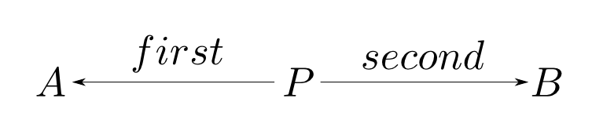

第1回圏論勉強会
@ワークスアプリケーションズ
中村晃一2013年5月16日
謝辞
この勉強会の企画、会場設備の提供をして頂きました
㈱ ワークスアプリケーションズ
様にこの場をお借りして御礼申し上げます。
自己紹介
- 中村晃一
- 東京大学大学院情報理工学系研究科コンピュータ科学専攻
後期博士課程2年 - プログラム最適化・言語処理系の実装技術・人間と言語の関係等に興味があります。
- twitter: @9_ties
はじめに
この会について
- 圏論(Category Theory)を題材にいろんなことを学びます。
- 計算機科学関係の話題が多めになると思います。
- 毎週1回、全12週くらいの予定です。
- 何らかの関数型言語に触れていた方が今後の授業をより楽しめると思います。
- 質問・コメント大歓迎です。他の聴衆の為にもなるので後回しにせずその場でどうぞ。
- この資料はhttp://github.com/nineties/category-seminarに置いてあります。
参考書
- Steve Awodey著 Category Theory をお薦めします。
- 非数学専攻者向けに書かれています。
- http://www.andrew.cmu.edu/course/80-413-713/notes/

第１回:圏論って何?
第1回の内容
初回は圏論の全体像をつかむ為の話をします。
- 圏論って何？
- 圏論って何の役に立つの?
- 圏論ってどう勉強するの?
- 圏論って学ぶ価値があるの?
具体例から始めよう
問: データ型A,Bが与えられているとします。
AとBの対(pair)を表すデータ型Pをどう定義すれば良いでしょうか？
/* C言語での例 */
struct P {
A first;
B second;
};
-- Haskellでの例
type P = (A, B)
data P = Pair A B
data P = Pair { first :: A, second :: B }
他にもいろいろ考えて下さい。
沢山の例ありがとうございました
どの例も「A,Bの対」と言えそうです。一方
type P = (A, B, Int)
みたいなのは「A,Bの対」とは言えなさそうです。
結局「対」とは何なのでしょうか?
抽象的に考えよう
A,B,Pの具体的な内部構造に一切触れずに「対」の概念を考える必要があります。
PがA,Bの対であるならばまず
- P(型のデータ,以下略)からA,Bを読み出す関数first,second
この様な状況を以下のように図式(Diagram)で表現してみます。

データを取り出す他にも様々な計算が行えるからです。
そこで任意の型$X$と任意の関数$f: X\rightarrow A$、$g: X\rightarrow B$に対して、以下のような図式を考えます。
$X$から$A$,$B$の値を作れるなら、それらの値の対を$X$から作る関数$u$が必ず存在するはずです。